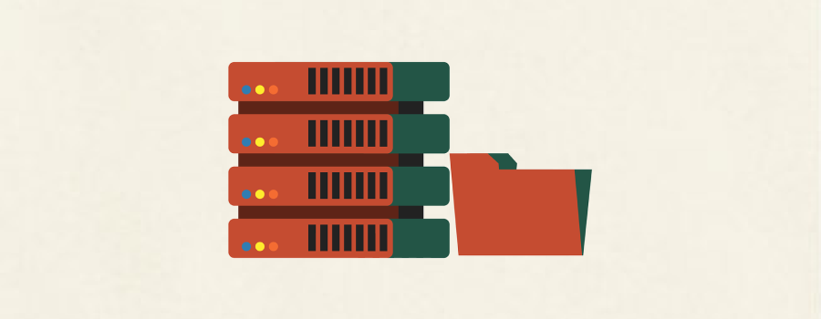
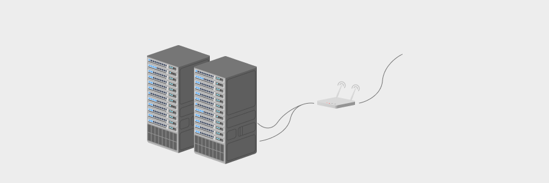
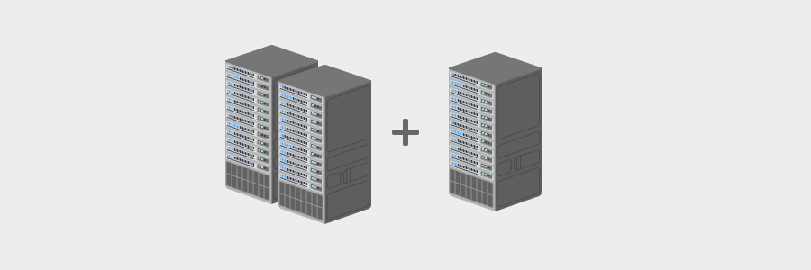

<!DOCTYPE html><html lang="kr"><head><meta charSet="utf-8"/><meta name="viewport" content="width=device-width, initial-scale=1"/><link rel="preload" href="/_next/static/media/a15f2fce4b98b461-s.p.woff2" as="font" crossorigin="" type="font/woff2"/><link rel="preload" as="image" href="/images/logo.svg"/><link rel="preload" as="image" href="./evolution-history-of-server-management.png"/><link rel="preload" as="image" href="evolution-history-of-server-management-1.png"/><link rel="preload" as="image" href="evolution-history-of-server-management-2.png"/><link rel="preload" as="image" href="evolution-history-of-server-management-3.png"/><link rel="preload" as="image" href="evolution-history-of-server-management-4.png"/><link rel="stylesheet" href="/_next/static/css/36b495b034574090.css" data-precedence="next"/><link rel="stylesheet" href="/_next/static/css/00092d5ad1b87658.css" data-precedence="next"/><link rel="stylesheet" href="/_next/static/css/b2a4095017a7d650.css" data-precedence="next"/><link rel="stylesheet" href="/_next/static/css/ae4f66ea80ce106d.css" data-precedence="next"/><link rel="preload" href="/_next/static/chunks/webpack-73d543bcdb0d3e9d.js" as="script" fetchPriority="low"/><script src="/_next/static/chunks/fd9d1056-22249b5849022fd7.js" async=""></script><script src="/_next/static/chunks/864-70ebad4d880e1f3b.js" async=""></script><script src="/_next/static/chunks/main-app-33a23439339f035f.js" async=""></script><script async="" src="https://pagead2.googlesyndication.com/pagead/js/adsbygoogle.js?client=ca-pub-4998422659731294" crossorigin="anonymous"></script><meta name="google-site-verification" content="bbZ2jHC5uGJy6gqrZ1mX7JzvXjvvvm4fsDuCMrmYhGw"/><title>서버관리의 발전과 역사 - Hibernation IT</title><meta name="description" content="서버관리의 발전과 역사에 대해서 공부하기 위해 작성한 포스팅이다.  서버를 관리하는 방법은 웹에 대해 조금만 공부해도 계속해서 처음보는 무언가가 튀어 나온다.  ..."/><meta property="og:title" content="서버관리의 발전과 역사 - Hibernation IT"/><meta property="og:description" content="서버관리의 발전과 역사에 대해서 공부하기 위해 작성한 포스팅이다.  서버를 관리하는 방법은 웹에 대해 조금만 공부해도 계속해서 처음보는 무언가가 튀어 나온다.  ..."/><meta property="og:image" content="https://hibernationit.github.io/blog/evolution-history-of-server-management/evolution-history-of-server-management.png"/><meta name="twitter:card" content="summary_large_image"/><meta name="twitter:title" content="서버관리의 발전과 역사 - Hibernation IT"/><meta name="twitter:description" content="서버관리의 발전과 역사에 대해서 공부하기 위해 작성한 포스팅이다.  서버를 관리하는 방법은 웹에 대해 조금만 공부해도 계속해서 처음보는 무언가가 튀어 나온다.  ..."/><meta name="twitter:image" content="https://hibernationit.github.io/blog/evolution-history-of-server-management/evolution-history-of-server-management.png"/><link rel="icon" href="/favicon.ico" type="image/x-icon" sizes="32x32"/><meta name="next-size-adjust"/><script src="/_next/static/chunks/polyfills-c67a75d1b6f99dc8.js" noModule=""></script></head><body class="__className_9dff5b"><main><header class="header_header__v3u3I"><a href="/"></a><ul><li><a href="/">Home</a></li><li><a href="/project/">Project</a></li><li><a href="/icon/">Icon</a></li><li><a href="/blog/">Blog</a></li><li><a href="/illust/">Illust</a></li><li><a href="/about/">About</a></li></ul></header><main class="page_main__a5wrv"><section class="page_header__nUMbM"><h3 class="page_dateBox__n4Pg_">2023년 07월 13일</h3><div class="page_title__rfBcm"><h1>서버관리의 발전과 역사</h1></div><div class="page_chips__hoyVa"><div class="page_tag__F_8df">develop</div></div></section><ins class="adsbygoogle" style="display:block" data-ad-client="ca-pub-4998422659731294" data-ad-slot="6878857551" data-ad-format="auto" data-full-width-responsive="true"></ins><section class="content_content__IJfBU"><p>서버관리의 발전과 역사에 대해서 공부하기 위해 작성한 포스팅이다.</p>
<p>서버를 관리하는 방법은 웹에 대해 조금만 공부해도 계속해서 처음보는 무언가가 튀어 나온다.</p>
<p>현재 회사에서는 쿠버네티스를 사용하고 있는데, 어떻게 해서 쿠버네티스라는 서버 관리 플랫폼이 나오게 되었는지 궁금하여 역사와 발전에 대해 정리하는 시간을 가졌다.</p>
<h1>자체 서버의 구축과 운영</h1>
<hr/>
<p></p>
<h2>자체 서버란 무엇일까</h2>
<blockquote>
<p>서버 컴퓨터를 구매하고 라우터를 연결하고 인터넷을 연결해서 서버 컴퓨터에 OS를 설치하고...</p>
</blockquote>
<p>말 그대로 자체로 서버 컴퓨터를 큰 비용을 지불하고 구매하여 구축하는 것이다.</p>
<p>서버 컴퓨터에 OS를 설치하고 네트워크를 설정하고 애플리케이션을 서버에 업로드하여 실행하는 방식이다.</p>
<h3>단점</h3>
<p></p>
<ol>
<li>사용자가 많아져서 서버 컴퓨터의 성능 업그레이드가 필요하다면 추가로 하드웨어를 구매해서 증설해야한다.</li>
<li>서버 컴퓨터는 작지 않다. 때문에 서버 컴퓨터를 놓을 <strong>공간</strong>이 필요하다.</li>
<li>서버 컴퓨터는 열이 많이 발생하기 때문에 서버 컴퓨터가 있는 공간은 24시간 냉방이 필요하다.</li>
</ol>
<h1>설정 관리 도구를 통한 서버 운영</h1>
<hr/>
<h2>설정 관리 도구란 무엇인가</h2>
<blockquote>
<p>주기적으로 실행되어야하는 애플리케이션 또는 애플리케이션의 버전 관리</p>
</blockquote>
<p>상태 관리 코드라는 개념을 통해 직관적인 버전의 관리가 가능해지고 이를 통해 상태 관리 파일을 만들어, 보다 쉽게 다른 서버에 애플리케이션을 설치할 수 있게 되었다.</p>
<h3>장점</h3>
<ol>
<li>버전 관리의 편의성 증가했다.</li>
<li>애플리케이션의 설치 및 구동이 보다 쉬워졌다.</li>
</ol>
<h3>단점</h3>
<ol>
<li>상태 관리 코드를 통해서는 한 서버에는 하나의 애플리케이션만 설치가 가능</li>
</ol>
<h1>가상 머신을 통한 서버 구축</h1>
<hr/>
<blockquote>
<p>가상화 개념의 시작. 서버 구축 및 운영의 큰 틀이 바뀌게 된 계기.</p>
</blockquote>
<p></p>
<h2>가상 머신이란?</h2>
<p>하나의 컴퓨터에 가상의 컴퓨터를 만들어, 개별적으로 작동하는 것 같은 사용자 경험을 제공해 주는 것을 말한다.</p>
<h3>장점</h3>
<ol>
<li>가상 컴퓨터의 상태를 저장하여 백업하고 문제가 발생하였을 때 되돌리는 것이 쉬워졌다.</li>
<li>하나의 물리적인 컴퓨터에 여러개의 애플리케이션을 올리는 것이 간편해졌다.</li>
<li>가상 컴퓨터를 이미지로 다른 서버에 동일한 사양 및 설정으로 만들 수 있다.</li>
</ol>
<h3>단점</h3>
<ol>
<li>가상 컴퓨터라지만 <strong>컴퓨터</strong>이기 때문에 이미지의 용량이 크고 무거워, 시간이 오래걸렸다.</li>
<li>하나의 컴퓨터에 다량의 OS를 설치하기 때문에 상대적으로 속도가 정말 느리다.</li>
</ol>
<h1>클라우드를 통한 서버 구축 및 관리</h1>
<hr/>
<blockquote>
<p>공간의 자유, 비용의 절감, 관리 포인트의 최소화</p>
</blockquote>
<p></p>
<h2>클라우드란</h2>
<p>클라우드란 네트워크를 통해 접근할 수 있는 가상화된 서버와 이러한 서버에서 작동하는 프로그램을 제공하는 IT 환경을 말한다.</p>
<h3>장점</h3>
<ol>
<li>서버 컴퓨터를 설치할 공간이 필요하지 않아졌다.</li>
<li>서버 컴퓨터를 물리적으로 관리할 필요가 없어졌다.</li>
<li>더 적은 비용으로 서버 구축이 가능해졌다.</li>
</ol>
<h1>PaaS를 통한 서버 운영</h1>
<hr/>
<blockquote>
<p>PaaS (Platform as a Service): 하드웨어 및 소프트웨어 플랫폼을 제공하는 클라우드 서비스</p>
</blockquote>
<h2>PaaS란?</h2>
<p>한 마디로 플랫폼 기반 서비스이다.</p>
<p>여기서 말하는 <strong>플랫폼</strong>이란 쉽게 말하자면 서비스라고 생각하면 된다.</p>
<p>기존에는 내가 작성한 코드를 서버에 업로드하고 빌드하여 구동해야 했다면, 플랫폼 기반 서비스를 통해 소스코드를 업로드하는 것만으로 빌드 및 구동, 배포를 지원해주는 것이다.</p>
<h3>장점</h3>
<ol>
<li>빌드 및 구동, 배포와 같은 과정을 생략할 수 있다.</li>
</ol>
<h3>단점</h3>
<ol>
<li>PaaS를 제공해주는 서비스에 맞춰서 소스코드를 작성해야한다.</li>
<li>원하는 대로 마음껏 커스터마이징이 불가능 하다.</li>
</ol>
<h1>Docker를 통한 서버 관리</h1>
<hr/>
<blockquote>
<p>보다 쉬운 가상화. 보다 빠른 속도</p>
</blockquote>
<h2>Docker 란</h2>
<p>컨테이너라는 새로운 개념을 기반으로 하는 오픈소스 가상화 플랫폼이다.</p>
<p>가상 머신과 비슷하지만 완전히 다른 개념을 통해 더 빠르고 가벼운 가상화가 가능하다.</p>
<h3>장점</h3>
<ol>
<li>가볍기 때문에 속도가 빠르다.</li>
<li>Docker가 설치되는 환경이라면 Docker로 빌드된 모든 애플리케이션을 실행할 수 있다.</li>
</ol>
<h3>단점</h3>
<ol>
<li>서비스가 많아질 수록 애플리케이션을 하나하나 따로 실행해줘야 하며, 서비스 검색이 불편해진다.</li>
</ol>
<h1>Kubernetes를 통한 컨테이너 관리</h1>
<hr/>
<blockquote>
<p>Docker의 번거로움을 해결하기 위한 해결책</p>
</blockquote>
<h2>Kubernetes란</h2>
<p>Docker의 문제점을 해결하기 위해서는 컨테이너 관리 도구를 따로 마련해야했다.</p>
<p>하지만 컨테이너 관리 도구를 사용하더라도 컨테이너 관리 도구를 구축해야한다는 <strong>일 거리</strong>가 추가되는 것이다.</p>
<p>Kbuernetes는 이를 해결하기 위해 Docker의 문제점을 한번에 잡아서 해결해준 오픈소스 플랫폼이다.</p>
<p>간단하게 말하자면 Docker의 확장판이다.</p>
<h3>장점</h3>
<ol>
<li>서비스의 일괄 처리가 가능하다.</li>
<li>하나의 컨테이너에 너무 많은 사용자가 생길 경우, 자동으로 컨테이너의 개수가 늘려준다.</li>
<li>컨테이너가 종료될 경우 자동으로 다시 구동시켜준다.</li>
</ol>
<p><em>잘못된 정보의 비판은 언제든 환영입니다.</em></p></section><ins class="adsbygoogle" style="display:block" data-ad-client="ca-pub-4998422659731294" data-ad-slot="6878857551" data-ad-format="auto" data-full-width-responsive="true"></ins><section class="utterances_content__ybnoM"><h1>댓글</h1></section><script></script></main></main><script src="/_next/static/chunks/webpack-73d543bcdb0d3e9d.js" async=""></script><script>(self.__next_f=self.__next_f||[]).push([0])</script><script>self.__next_f.push([1,"1:HL[\"/_next/static/media/a15f2fce4b98b461-s.p.woff2\",\"font\",{\"crossOrigin\":\"\",\"type\":\"font/woff2\"}]\n2:HL[\"/_next/static/css/36b495b034574090.css\",\"style\"]\n3:HL[\"/_next/static/css/00092d5ad1b87658.css\",\"style\"]\n0:\"$L4\"\n"])</script><script>self.__next_f.push([1,"5:HL[\"/_next/static/css/b2a4095017a7d650.css\",\"style\"]\n6:HL[\"/_next/static/css/ae4f66ea80ce106d.css\",\"style\"]\n"])</script><script>self.__next_f.push([1,"7:I{\"id\":6054,\"chunks\":[\"272:static/chunks/webpack-73d543bcdb0d3e9d.js\",\"971:static/chunks/fd9d1056-22249b5849022fd7.js\",\"864:static/chunks/864-70ebad4d880e1f3b.js\"],\"name\":\"\",\"async\":false}\n9:I{\"id\":1729,\"chunks\":[\"272:static/chunks/webpack-73d543bcdb0d3e9d.js\",\"971:static/chunks/fd9d1056-22249b5849022fd7.js\",\"864:static/chunks/864-70ebad4d880e1f3b.js\"],\"name\":\"\",\"async\":false}\na:I{\"id\":1443,\"chunks\":[\"272:static/chunks/webpack-73d543bcdb0d3e9d.js\",\"971:static/chunks/fd9d1056-22249b5849022fd7.js\",\"864:stat"])</script><script>self.__next_f.push([1,"ic/chunks/864-70ebad4d880e1f3b.js\"],\"name\":\"\",\"async\":false}\nb:I{\"id\":8639,\"chunks\":[\"272:static/chunks/webpack-73d543bcdb0d3e9d.js\",\"971:static/chunks/fd9d1056-22249b5849022fd7.js\",\"864:static/chunks/864-70ebad4d880e1f3b.js\"],\"name\":\"\",\"async\":false}\nc:I{\"id\":4724,\"chunks\":[\"724:static/chunks/724-f449ff28f8308514.js\",\"768:static/chunks/app/blog/layout-4dc1a42ae9ec178a.js\"],\"name\":\"\",\"async\":false}\ne:I{\"id\":2292,\"chunks\":[\"679:static/chunks/679-f36bb8c86fd749cf.js\",\"817:static/chunks/app/(page)/blog/[page]/"])</script><script>self.__next_f.push([1,"page-1312db4e40c8eb83.js\"],\"name\":\"\",\"async\":false}\n"])</script><script>self.__next_f.push([1,"4:[[[\"$\",\"link\",\"0\",{\"rel\":\"stylesheet\",\"href\":\"/_next/static/css/36b495b034574090.css\",\"precedence\":\"next\"}],[\"$\",\"link\",\"1\",{\"rel\":\"stylesheet\",\"href\":\"/_next/static/css/00092d5ad1b87658.css\",\"precedence\":\"next\"}]],[\"$\",\"$L7\",null,{\"buildId\":\"MQ7tNRjBDC4wEPFMs2dhW\",\"assetPrefix\":\"\",\"initialCanonicalUrl\":\"/blog/evolution-history-of-server-management/\",\"initialTree\":[\"\",{\"children\":[\"(page)\",{\"children\":[\"blog\",{\"children\":[[\"page\",\"evolution-history-of-server-management\",\"d\"],{\"children\":[\"__PAGE__?{\\\"page\\\":\\\"evolution-history-of-server-management\\\"}\",{}]}]}]}]},\"$undefined\",\"$undefined\",true],\"initialHead\":[false,\"$L8\"],\"globalErrorComponent\":\"$9\",\"children\":[null,[\"$\",\"html\",null,{\"lang\":\"kr\",\"children\":[[\"$\",\"head\",null,{\"children\":[[\"$\",\"script\",null,{\"async\":true,\"src\":\"https://pagead2.googlesyndication.com/pagead/js/adsbygoogle.js?client=ca-pub-4998422659731294\",\"crossOrigin\":\"anonymous\"}],[\"$\",\"meta\",null,{\"name\":\"google-site-verification\",\"content\":\"bbZ2jHC5uGJy6gqrZ1mX7JzvXjvvvm4fsDuCMrmYhGw\"}]]}],[\"$\",\"body\",null,{\"className\":\"__className_9dff5b\",\"children\":[\"$\",\"$La\",null,{\"parallelRouterKey\":\"children\",\"segmentPath\":[\"children\"],\"loading\":\"$undefined\",\"loadingStyles\":\"$undefined\",\"hasLoading\":false,\"error\":\"$undefined\",\"errorStyles\":\"$undefined\",\"template\":[\"$\",\"$Lb\",null,{}],\"templateStyles\":\"$undefined\",\"notFound\":[\"$\",\"main\",null,{\"className\":\"not-found_main__n9Ud9\",\"children\":[\"$\",\"section\",null,{\"className\":\"not-found_content__krn5k\",\"children\":[[\"$\",\"img\",null,{\"src\":\"/images/nodata.svg\",\"alt\":\"nodata\"}],[\"$\",\"h1\",null,{\"children\":\"404\"}],[\"$\",\"p\",null,{\"children\":\"페이지를 찾을 수 없어요!\"}],[\"$\",\"$Lc\",null,{\"href\":\"/\",\"children\":\"홈으로 돌아가기\"}]]}]}],\"notFoundStyles\":[[\"$\",\"link\",\"0\",{\"rel\":\"stylesheet\",\"href\":\"/_next/static/css/20747a49c70fc5b3.css\",\"precedence\":\"next\"}]],\"childProp\":{\"current\":[null,[\"$\",\"main\",null,{\"children\":[[\"$\",\"header\",null,{\"className\":\"header_header__v3u3I\",\"children\":[[\"$\",\"$Lc\",null,{\"href\":\"/\",\"children\":[\"$\",\"img\",null,{\"src\":\"/images/logo.svg\",\"alt\":\"logo\"}]}],[\"$\",\"ul\",null,{\"children\":[[\"$\",\"li\",\"0\",{\"children\":[\"$\",\"$Lc\",null,{\"className\":\"$undefined\",\"href\":\"/\",\"children\":\"Home\"}]}],[\"$\",\"li\",\"1\",{\"children\":[\"$\",\"$Lc\",null,{\"className\":\"$undefined\",\"href\":\"/project\",\"children\":\"Project\"}]}],[\"$\",\"li\",\"2\",{\"children\":[\"$\",\"$Lc\",null,{\"className\":\"$undefined\",\"href\":\"/icon\",\"children\":\"Icon\"}]}],[\"$\",\"li\",\"3\",{\"children\":[\"$\",\"$Lc\",null,{\"className\":\"$undefined\",\"href\":\"/blog\",\"children\":\"Blog\"}]}],[\"$\",\"li\",\"4\",{\"children\":[\"$\",\"$Lc\",null,{\"className\":\"$undefined\",\"href\":\"/illust\",\"children\":\"Illust\"}]}],[\"$\",\"li\",\"5\",{\"children\":[\"$\",\"$Lc\",null,{\"className\":\"$undefined\",\"href\":\"/about\",\"children\":\"About\"}]}]]}]]}],[\"$\",\"$La\",null,{\"parallelRouterKey\":\"children\",\"segmentPath\":[\"children\",\"(page)\",\"children\"],\"loading\":\"$undefined\",\"loadingStyles\":\"$undefined\",\"hasLoading\":false,\"error\":\"$undefined\",\"errorStyles\":\"$undefined\",\"template\":[\"$\",\"$Lb\",null,{}],\"templateStyles\":\"$undefined\",\"notFound\":\"$undefined\",\"notFoundStyles\":\"$undefined\",\"childProp\":{\"current\":[\"$\",\"$La\",null,{\"parallelRouterKey\":\"children\",\"segmentPath\":[\"children\",\"(page)\",\"children\",\"blog\",\"children\"],\"loading\":\"$undefined\",\"loadingStyles\":\"$undefined\",\"hasLoading\":false,\"error\":\"$undefined\",\"errorStyles\":\"$undefined\",\"template\":[\"$\",\"$Lb\",null,{}],\"templateStyles\":\"$undefined\",\"notFound\":\"$undefined\",\"notFoundStyles\":\"$undefined\",\"childProp\":{\"current\":[\"$\",\"$La\",null,{\"parallelRouterKey\":\"children\",\"segmentPath\":[\"children\",\"(page)\",\"children\",\"blog\",\"children\",[\"page\",\"evolution-history-of-server-management\",\"d\"],\"children\"],\"loading\":\"$undefined\",\"loadingStyles\":\"$undefined\",\"hasLoading\":false,\"error\":\"$undefined\",\"errorStyles\":\"$undefined\",\"template\":[\"$\",\"$Lb\",null,{}],\"templateStyles\":\"$undefined\",\"notFound\":\"$undefined\",\"notFoundStyles\":\"$undefined\",\"childProp\":{\"current\":[\"$Ld\",[\"$\",\"main\",null,{\"className\":\"page_main__a5wrv\",\"children\":[[\"$\",\"section\",null,{\"className\":\"page_header__nUMbM\",\"children\":[[\"$\",\"img\",null,{\"className\":\"page_titleImg__oHqJB\",\"src\":\"./evolution-history-of-server-management.png\",\"alt\":\"evolution-history-of-server-management.png\"}],[\"$\",\"h3\",null,{\"className\":\"page_dateBox__n4Pg_\",\"children\":\"2023년 07월 13일\"}],[\"$\",\"div\",null,{\"className\":\"page_title__rfBcm\",\"children\":[\"$\",\"h1\",null,{\"children\":\"서버관리의 발전과 역사\"}]}],[\"$\",\"div\",null,{\"className\":\"page_chips__hoyVa\",\"children\":[[\"$\",\"div\",\"0\",{\"className\":\"page_tag__F_8df\",\"children\":\"develop\"}]]}]]}],[\"$\",\"ins\",null,{\"className\":\"adsbygoogle\",\"style\":{\"display\":\"block\"},\"data-ad-client\":\"ca-pub-4998422659731294\",\"data-ad-slot\":\"6878857551\",\"data-ad-format\":\"auto\",\"data-full-width-responsive\":\"true\"}],[\"$\",\"section\",null,{\"className\":\"content_content__IJfBU\",\"children\":[[\"$\",\"p\",\"p-0\",{\"children\":\"서버관리의 발전과 역사에 대해서 공부하기 위해 작성한 포스팅이다.\"}],\"\\n\",[\"$\",\"p\",\"p-1\",{\"children\":\"서버를 관리하는 방법은 웹에 대해 조금만 공부해도 계속해서 처음보는 무언가가 튀어 나온다.\"}],\"\\n\",[\"$\",\"p\",\"p-2\",{\"children\":\"현재 회사에서는 쿠버네티스를 사용하고 있는데, 어떻게 해서 쿠버네티스라는 서버 관리 플랫폼이 나오게 되었는지 궁금하여 역사와 발전에 대해 정리하는 시간을 가졌다.\"}],\"\\n\",[\"$\",\"h1\",\"h1-0\",{\"children\":\"자체 서버의 구축과 운영\"}],\"\\n\",[\"$\",\"hr\",\"hr-0\",{}],\"\\n\",[\"$\",\"p\",\"p-3\",{\"children\":[\"$\",\"img\",null,{\"src\":\"evolution-history-of-server-management-1.png\",\"alt\":\"image1\"}]}],\"\\n\",[\"$\",\"h2\",\"h2-0\",{\"children\":\"자체 서버란 무엇일까\"}],\"\\n\",[\"$\",\"blockquote\",\"blockquote-0\",{\"children\":[\"\\n\",[\"$\",\"p\",\"p-0\",{\"children\":\"서버 컴퓨터를 구매하고 라우터를 연결하고 인터넷을 연결해서 서버 컴퓨터에 OS를 설치하고...\"}],\"\\n\"]}],\"\\n\",[\"$\",\"p\",\"p-4\",{\"children\":\"말 그대로 자체로 서버 컴퓨터를 큰 비용을 지불하고 구매하여 구축하는 것이다.\"}],\"\\n\",[\"$\",\"p\",\"p-5\",{\"children\":\"서버 컴퓨터에 OS를 설치하고 네트워크를 설정하고 애플리케이션을 서버에 업로드하여 실행하는 방식이다.\"}],\"\\n\",[\"$\",\"h3\",\"h3-0\",{\"children\":\"단점\"}],\"\\n\",[\"$\",\"p\",\"p-6\",{\"children\":[\"$\",\"img\",null,{\"src\":\"evolution-history-of-server-management-2.png\",\"alt\":\"image2\"}]}],\"\\n\",[\"$\",\"ol\",\"ol-0\",{\"children\":[\"\\n\",[\"$\",\"li\",\"li-0\",{\"children\":\"사용자가 많아져서 서버 컴퓨터의 성능 업그레이드가 필요하다면 추가로 하드웨어를 구매해서 증설해야한다.\"}],\"\\n\",[\"$\",\"li\",\"li-1\",{\"children\":[\"서버 컴퓨터는 작지 않다. 때문에 서버 컴퓨터를 놓을 \",[\"$\",\"strong\",\"strong-0\",{\"children\":\"공간\"}],\"이 필요하다.\"]}],\"\\n\",[\"$\",\"li\",\"li-2\",{\"children\":\"서버 컴퓨터는 열이 많이 발생하기 때문에 서버 컴퓨터가 있는 공간은 24시간 냉방이 필요하다.\"}],\"\\n\"]}],\"\\n\",[\"$\",\"h1\",\"h1-1\",{\"children\":\"설정 관리 도구를 통한 서버 운영\"}],\"\\n\",[\"$\",\"hr\",\"hr-1\",{}],\"\\n\",[\"$\",\"h2\",\"h2-1\",{\"children\":\"설정 관리 도구란 무엇인가\"}],\"\\n\",[\"$\",\"blockquote\",\"blockquote-1\",{\"children\":[\"\\n\",[\"$\",\"p\",\"p-0\",{\"children\":\"주기적으로 실행되어야하는 애플리케이션 또는 애플리케이션의 버전 관리\"}],\"\\n\"]}],\"\\n\",[\"$\",\"p\",\"p-7\",{\"children\":\"상태 관리 코드라는 개념을 통해 직관적인 버전의 관리가 가능해지고 이를 통해 상태 관리 파일을 만들어, 보다 쉽게 다른 서버에 애플리케이션을 설치할 수 있게 되었다.\"}],\"\\n\",[\"$\",\"h3\",\"h3-1\",{\"children\":\"장점\"}],\"\\n\",[\"$\",\"ol\",\"ol-1\",{\"children\":[\"\\n\",[\"$\",\"li\",\"li-0\",{\"children\":\"버전 관리의 편의성 증가했다.\"}],\"\\n\",[\"$\",\"li\",\"li-1\",{\"children\":\"애플리케이션의 설치 및 구동이 보다 쉬워졌다.\"}],\"\\n\"]}],\"\\n\",[\"$\",\"h3\",\"h3-2\",{\"children\":\"단점\"}],\"\\n\",[\"$\",\"ol\",\"ol-2\",{\"children\":[\"\\n\",[\"$\",\"li\",\"li-0\",{\"children\":\"상태 관리 코드를 통해서는 한 서버에는 하나의 애플리케이션만 설치가 가능\"}],\"\\n\"]}],\"\\n\",[\"$\",\"h1\",\"h1-2\",{\"children\":\"가상 머신을 통한 서버 구축\"}],\"\\n\",[\"$\",\"hr\",\"hr-2\",{}],\"\\n\",[\"$\",\"blockquote\",\"blockquote-2\",{\"children\":[\"\\n\",[\"$\",\"p\",\"p-0\",{\"children\":\"가상화 개념의 시작. 서버 구축 및 운영의 큰 틀이 바뀌게 된 계기.\"}],\"\\n\"]}],\"\\n\",[\"$\",\"p\",\"p-8\",{\"children\":[\"$\",\"img\",null,{\"src\":\"evolution-history-of-server-management-3.png\",\"alt\":\"image3\"}]}],\"\\n\",[\"$\",\"h2\",\"h2-2\",{\"children\":\"가상 머신이란?\"}],\"\\n\",[\"$\",\"p\",\"p-9\",{\"children\":\"하나의 컴퓨터에 가상의 컴퓨터를 만들어, 개별적으로 작동하는 것 같은 사용자 경험을 제공해 주는 것을 말한다.\"}],\"\\n\",[\"$\",\"h3\",\"h3-3\",{\"children\":\"장점\"}],\"\\n\",[\"$\",\"ol\",\"ol-3\",{\"children\":[\"\\n\",[\"$\",\"li\",\"li-0\",{\"children\":\"가상 컴퓨터의 상태를 저장하여 백업하고 문제가 발생하였을 때 되돌리는 것이 쉬워졌다.\"}],\"\\n\",[\"$\",\"li\",\"li-1\",{\"children\":\"하나의 물리적인 컴퓨터에 여러개의 애플리케이션을 올리는 것이 간편해졌다.\"}],\"\\n\",[\"$\",\"li\",\"li-2\",{\"children\":\"가상 컴퓨터를 이미지로 다른 서버에 동일한 사양 및 설정으로 만들 수 있다.\"}],\"\\n\"]}],\"\\n\",[\"$\",\"h3\",\"h3-4\",{\"children\":\"단점\"}],\"\\n\",[\"$\",\"ol\",\"ol-4\",{\"children\":[\"\\n\",[\"$\",\"li\",\"li-0\",{\"children\":[\"\\b가상 컴퓨터라지만 \",[\"$\",\"strong\",\"strong-0\",{\"children\":\"컴퓨터\"}],\"이기 때문에 이미지의 용량이 크고 무거워, 시간이 오래걸렸다.\"]}],\"\\n\",[\"$\",\"li\",\"li-1\",{\"children\":\"하나의 컴퓨터에 다량의 OS를 설치하기 때문에 상대적으로 속도가 정말 느리다.\"}],\"\\n\"]}],\"\\n\",[\"$\",\"h1\",\"h1-3\",{\"children\":\"클라우드를 통한 서버 구축 및 관리\"}],\"\\n\",[\"$\",\"hr\",\"hr-3\",{}],\"\\n\",[\"$\",\"blockquote\",\"blockquote-3\",{\"children\":[\"\\n\",[\"$\",\"p\",\"p-0\",{\"children\":\"공간의 자유, 비용의 절감, 관리 포인트의 최소화\"}],\"\\n\"]}],\"\\n\",[\"$\",\"p\",\"p-10\",{\"children\":[\"$\",\"img\",null,{\"src\":\"evolution-history-of-server-management-4.png\",\"alt\":\"image4\"}]}],\"\\n\",[\"$\",\"h2\",\"h2-3\",{\"children\":\"클라우드란\"}],\"\\n\",[\"$\",\"p\",\"p-11\",{\"children\":\"클라우드란 네트워크를 통해 접근할 수 있는 가상화된 서버와 이러한 서버에서 작동하는 프로그램을 제공하는 IT 환경을 말한다.\"}],\"\\n\",[\"$\",\"h3\",\"h3-5\",{\"children\":\"장점\"}],\"\\n\",[\"$\",\"ol\",\"ol-5\",{\"children\":[\"\\n\",[\"$\",\"li\",\"li-0\",{\"children\":\"서버 컴퓨터를 설치할 공간이 필요하지 않아졌다.\"}],\"\\n\",[\"$\",\"li\",\"li-1\",{\"children\":\"서버 컴퓨터를 물리적으로 관리할 필요가 없어졌다.\"}],\"\\n\",[\"$\",\"li\",\"li-2\",{\"children\":\"더 적은 비용으로 서버 구축이 가능해졌다.\"}],\"\\n\"]}],\"\\n\",[\"$\",\"h1\",\"h1-4\",{\"children\":\"PaaS를 통한 서버 운영\"}],\"\\n\",[\"$\",\"hr\",\"hr-4\",{}],\"\\n\",[\"$\",\"blockquote\",\"blockquote-4\",{\"children\":[\"\\n\",[\"$\",\"p\",\"p-0\",{\"children\":\"PaaS (Platform as a Service): 하드웨어 및 소프트웨어 플랫폼을 제공하는 클라우드 서비스\"}],\"\\n\"]}],\"\\n\",[\"$\",\"h2\",\"h2-4\",{\"children\":\"PaaS란?\"}],\"\\n\",[\"$\",\"p\",\"p-12\",{\"children\":\"한 마디로 플랫폼 기반 서비스이다.\"}],\"\\n\",[\"$\",\"p\",\"p-13\",{\"children\":[\"여기서 말하는 \",[\"$\",\"strong\",\"strong-0\",{\"children\":\"플랫폼\"}],\"이란 쉽게 말하자면 서비스라고 생각하면 된다.\"]}],\"\\n\",[\"$\",\"p\",\"p-14\",{\"children\":\"기존에는 내가 작성한 코드를 서버에 업로드하고 빌드하여 구동해야 했다면, 플랫폼 기반 서비스를 통해 소스코드를 업로드하는 것만으로 빌드 및 구동, 배포를 지원해주는 것이다.\"}],\"\\n\",[\"$\",\"h3\",\"h3-6\",{\"children\":\"장점\"}],\"\\n\",[\"$\",\"ol\",\"ol-6\",{\"children\":[\"\\n\",[\"$\",\"li\",\"li-0\",{\"children\":\"빌드 및 구동, 배포와 같은 과정을 생략할 수 있다.\"}],\"\\n\"]}],\"\\n\",[\"$\",\"h3\",\"h3-7\",{\"children\":\"단점\"}],\"\\n\",[\"$\",\"ol\",\"ol-7\",{\"children\":[\"\\n\",[\"$\",\"li\",\"li-0\",{\"children\":\"\\bPaaS를 제공해주는 서비스에 맞춰서 소스코드를 작성해야한다.\"}],\"\\n\",[\"$\",\"li\",\"li-1\",{\"children\":\"원하는 대로 마음껏 커스터마이징이 불가능 하다.\"}],\"\\n\"]}],\"\\n\",[\"$\",\"h1\",\"h1-5\",{\"children\":\"Docker를 통한 서버 관리\"}],\"\\n\",[\"$\",\"hr\",\"hr-5\",{}],\"\\n\",[\"$\",\"blockquote\",\"blockquote-5\",{\"children\":[\"\\n\",[\"$\",\"p\",\"p-0\",{\"children\":\"보다 쉬운 가상화. 보다 빠른 속도\"}],\"\\n\"]}],\"\\n\",[\"$\",\"h2\",\"h2-5\",{\"children\":\"Docker 란\"}],\"\\n\",[\"$\",\"p\",\"p-15\",{\"children\":\"컨테이너라는 새로운 개념을 기반으로 하는 오픈소스 가상화 플랫폼이다.\"}],\"\\n\",[\"$\",\"p\",\"p-16\",{\"children\":\"가상 머신과 비슷하지만 완전히 다른 개념을 통해 더 빠르고 가벼운 가상화가 가능하다.\"}],\"\\n\",[\"$\",\"h3\",\"h3-8\",{\"children\":\"장점\"}],\"\\n\",[\"$\",\"ol\",\"ol-8\",{\"children\":[\"\\n\",[\"$\",\"li\",\"li-0\",{\"children\":\"가볍기 때문에 속도가 빠르다.\"}],\"\\n\",[\"$\",\"li\",\"li-1\",{\"children\":\"Docker가 설치되는 환경이라면 Docker로 빌드된 모든 애플리케이션을 실행할 수 있다.\"}],\"\\n\"]}],\"\\n\",[\"$\",\"h3\",\"h3-9\",{\"children\":\"단점\"}],\"\\n\",[\"$\",\"ol\",\"ol-9\",{\"children\":[\"\\n\",[\"$\",\"li\",\"li-0\",{\"children\":\"서비스가 많아질 수록 애플리케이션을 하나하나 따로 실행해줘야 하며, 서비스 검색이 불편해진다.\"}],\"\\n\"]}],\"\\n\",[\"$\",\"h1\",\"h1-6\",{\"children\":\"Kubernetes를 통한 컨테이너 관리\"}],\"\\n\",[\"$\",\"hr\",\"hr-6\",{}],\"\\n\",[\"$\",\"blockquote\",\"blockquote-6\",{\"children\":[\"\\n\",[\"$\",\"p\",\"p-0\",{\"children\":\"Docker의 번거로움을 해결하기 위한 해결책\"}],\"\\n\"]}],\"\\n\",[\"$\",\"h2\",\"h2-6\",{\"children\":\"Kubernetes란\"}],\"\\n\",[\"$\",\"p\",\"p-17\",{\"children\":\"Docker의 문제점을 해결하기 위해서는 컨테이너 관리 도구를 따로 마련해야했다.\"}],\"\\n\",[\"$\",\"p\",\"p-18\",{\"children\":[\"하지만 컨테이너 관리 도구를 사용하더라도 컨테이너 관리 도구를 구축해야한다는 \",[\"$\",\"strong\",\"strong-0\",{\"children\":\"일 거리\"}],\"가 추가되는 것이다.\"]}],\"\\n\",[\"$\",\"p\",\"p-19\",{\"children\":\"Kbuernetes는 이를 해결하기 위해 Docker의 문제점을 한번에 잡아서 해결해준 오픈소스 플랫폼이다.\"}],\"\\n\",[\"$\",\"p\",\"p-20\",{\"children\":\"간단하게 말하자면 Docker의 확장판이다.\"}],\"\\n\",[\"$\",\"h3\",\"h3-10\",{\"children\":\"장점\"}],\"\\n\",[\"$\",\"ol\",\"ol-10\",{\"children\":[\"\\n\",[\"$\",\"li\",\"li-0\",{\"children\":\"서비스의 일괄 처리가 가능하다.\"}],\"\\n\",[\"$\",\"li\",\"li-1\",{\"children\":\"하나의 컨테이너에 너무 많은 사용자가 생길 경우, 자동으로 컨테이너의 개수가 늘려준다.\"}],\"\\n\",[\"$\",\"li\",\"li-2\",{\"children\":\"컨테이너가 종료될 경우 자동으로 다시 구동시켜준다.\"}],\"\\n\"]}],\"\\n\",[\"$\",\"p\",\"p-21\",{\"children\":[\"$\",\"em\",\"em-0\",{\"children\":\"잘못된 정보의 비판은 언제든 환영입니다.\"}]}]]}],[\"$\",\"ins\",null,{\"className\":\"adsbygoogle\",\"style\":{\"display\":\"block\"},\"data-ad-client\":\"ca-pub-4998422659731294\",\"data-ad-slot\":\"6878857551\",\"data-ad-format\":\"auto\",\"data-full-width-responsive\":\"true\"}],[\"$\",\"$Le\",null,{}],[\"$\",\"script\",null,{\"children\":[\"(adsbygoogle = window.adsbygoogle || []).push(\",\");\"]}]]}],null],\"segment\":\"__PAGE__?{\\\"page\\\":\\\"evolution-history-of-server-management\\\"}\"},\"styles\":[[\"$\",\"link\",\"0\",{\"rel\":\"stylesheet\",\"href\":\"/_next/static/css/ae4f66ea80ce106d.css\",\"precedence\":\"next\"}]]}],\"segment\":[\"page\",\"evolution-history-of-server-management\",\"d\"]},\"styles\":[]}],\"segment\":\"blog\"},\"styles\":[]}]]}],null],\"segment\":\"(page)\"},\"styles\":[[\"$\",\"link\",\"0\",{\"rel\":\"stylesheet\",\"href\":\"/_next/static/css/b2a4095017a7d650.css\",\"precedence\":\"next\"}]]}]}]]}],null]}]]\n"])</script><script>self.__next_f.push([1,"8:[[\"$\",\"meta\",\"0\",{\"charSet\":\"utf-8\"}],[\"$\",\"title\",\"1\",{\"children\":\"서버관리의 발전과 역사 - Hibernation IT\"}],[\"$\",\"meta\",\"2\",{\"name\":\"description\",\"content\":\"서버관리의 발전과 역사에 대해서 공부하기 위해 작성한 포스팅이다.  서버를 관리하는 방법은 웹에 대해 조금만 공부해도 계속해서 처음보는 무언가가 튀어 나온다.  ...\"}],[\"$\",\"meta\",\"3\",{\"name\":\"viewport\",\"content\":\"width=device-width, initial-scale=1\"}],[\"$\",\"meta\",\"4\",{\"property\":\"og:title\",\"content\":\"서버관리의 발전과 역사 - Hibernation IT\"}],[\"$\",\"meta\",\"5\",{\"property\":\"og:description\",\"content\":\"서버관리의 발전과 역사에 대해서 공부하기 위해 작성한 포스팅이다.  서버를 관리하는 방법은 웹에 대해 조금만 공부해도 계속해서 처음보는 무언가가 튀어 나온다.  ...\"}],[\"$\",\"meta\",\"6\",{\"property\":\"og:image\",\"content\":\"https://hibernationit.github.io/blog/evolution-history-of-server-management/evolution-history-of-server-management.png\"}],[\"$\",\"meta\",\"7\",{\"name\":\"twitter:card\",\"content\":\"summary_large_image\"}],[\"$\",\"meta\",\"8\",{\"name\":\"twitter:title\",\"content\":\"서버관리의 발전과 역사 - Hibernation IT\"}],[\"$\",\"meta\",\"9\",{\"name\":\"twitter:description\",\"content\":\"서버관리의 발전과 역사에 대해서 공부하기 위해 작성한 포스팅이다.  서버를 관리하는 방법은 웹에 대해 조금만 공부해도 계속해서 처음보는 무언가가 튀어 나온다.  ...\"}],[\"$\",\"meta\",\"10\",{\"name\":\"twitter:image\",\"content\":\"https://hibernationit.github.io/blog/evolution-history-of-server-management/evolution-history-of-server-management.png\"}],[\"$\",\"link\",\"11\",{\"rel\":\"icon\",\"href\":\"/favicon.ico\",\"type\":\"image/x-icon\",\"sizes\":\"32x32\"}],[\"$\",\"meta\",\"12\",{\"name\":\"next-size-adjust\"}]]\n"])</script><script>self.__next_f.push([1,"d:null\n"])</script></body></html>